할일 화면 알아보기
-
1 / 4
해야 할 일을 한눈에 확인합니다
메인 화면에서는 가까운 납기의 할일과 내가 만든 목록을 빠르게 확인할 수 있습니다.
- 오늘·내일
- 오늘과 내일이 납기인 할일, 그리고 납기가 지났지만 아직 완료하지 않은 할일을 모아 보여 줍니다.
- 나의 목록
- ‘전체보기’와 직접 만든 목록, 다음 회차를 기다리는 ‘대기중인 할 일’, ‘완료된 항목’을 확인할 수 있습니다.
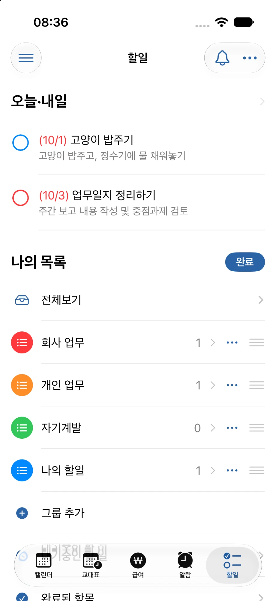
-
2 / 4
할일과 그룹을 빠르게 추가합니다
오른쪽 위의 + 버튼을 누르면 ‘그룹 신규 추가’와 ‘할일 추가’ 중에서 골라 바로 추가할 수 있습니다.
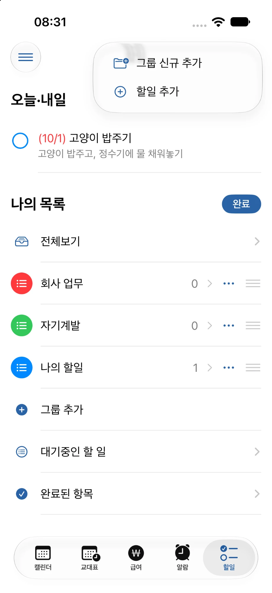
-
3 / 4
발생한 할일 알림을 확인합니다
‘알림함’ 버튼을 누르면 알림이 설정된 할일에서 받은 알림 내역을 확인할 수 있습니다. 읽지 않은 알림이 있으면 버튼에 표시됩니다.
확인한 알림은 ‘모든 알림 지우기’로 한 번에 정리할 수 있습니다.
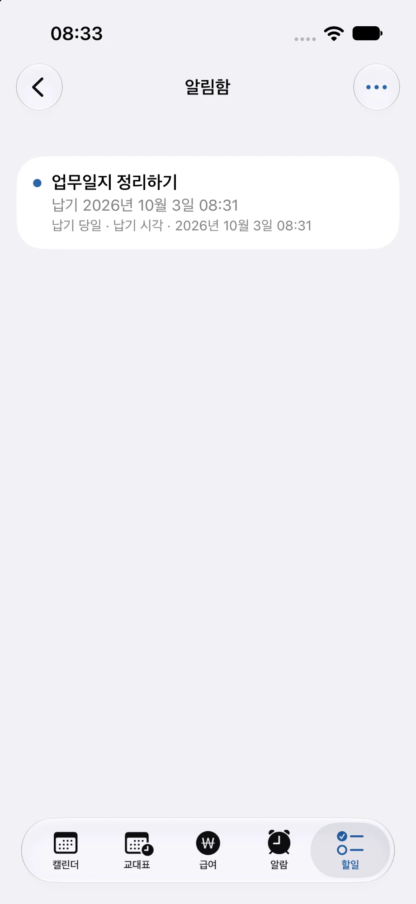
-
4 / 4
나만의 그룹을 만듭니다
할일을 목적에 따라 나누고 싶다면 새로운 그룹(목록)을 만들 수 있습니다.
‘목록 이름’과 ‘색상’을 직접 정해 업무, 개인 일정 등 원하는 기준으로 구분해 사용할 수 있습니다. 색상은 빨강, 주황, 노랑, 초록, 청록, 파랑, 남색, 보라, 분홍, 회색 중에서 고릅니다.
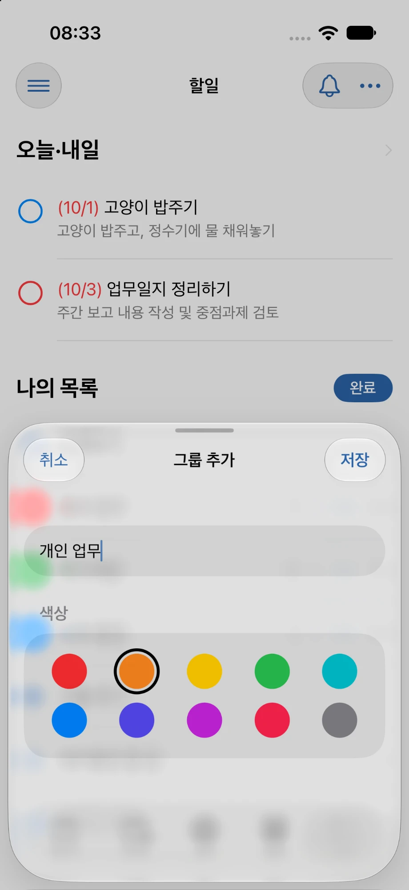
할일 추가하기
-
1 / 6
할일의 기본 내용을 입력합니다
할일을 저장할 목록을 선택하고 ‘제목’과 필요한 ‘메모’를 입력합니다.
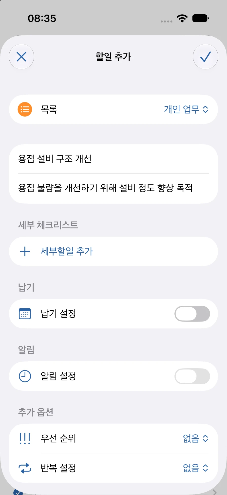
-
2 / 6
큰 할일을 여러 단계로 나눕니다
‘세부할일’을 추가해 하나의 할일을 단계별로 나누어 관리할 수 있습니다.
완료한 세부할일 비율이 진행률로 계산되어 목록에서 ‘50%’처럼 퍼센트로 표시됩니다. 세부할일을 모두 완료해도 할일 자체가 자동으로 완료되지는 않으며, 할일을 완료하면 남은 세부할일도 함께 완료됩니다.
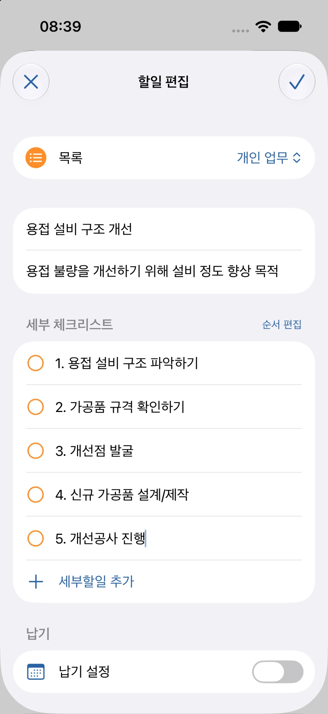
-
3 / 6
언제까지 해야 하는지 납기를 정합니다
납기를 설정하면 할일 목록에서 처리해야 할 시점을 함께 확인할 수 있습니다.
- 날짜
- 납기 날짜를 고르고, 시간은 ‘시간 없음’ 또는 ‘시간 지정’으로 정합니다.
- 근무 시간과 연결
- 납기 날짜가 근무일이라면 시간 대신 ‘근무 시작’ 또는 ‘근무 종료’를 고를 수 있습니다. 그날 근무 시간에 맞춰 납기 시각이 정해집니다.
- 근무 날짜 기준
- 날짜 대신 ‘근무 날짜’를 기준으로 고르면, 선택한 근무 종류가 있는 날을 찾아 납기로 정합니다.
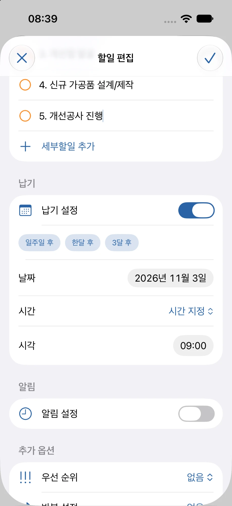
-
4 / 6
납기 전에 미리 알림을 받습니다
납기가 설정된 할일에는 알림을 설정할 수 있습니다.
‘당일’, ‘1일 전’처럼 납기 며칠 전에 받을지 고를 수 있고, 하나의 할일에 여러 개의 알림을 둘 수 있습니다.
‘알림 추가’를 이용하면 원하는 날짜와 시각, 또는 그날의 근무 시작·종료 시각에 맞춘 알림도 따로 추가할 수 있습니다.
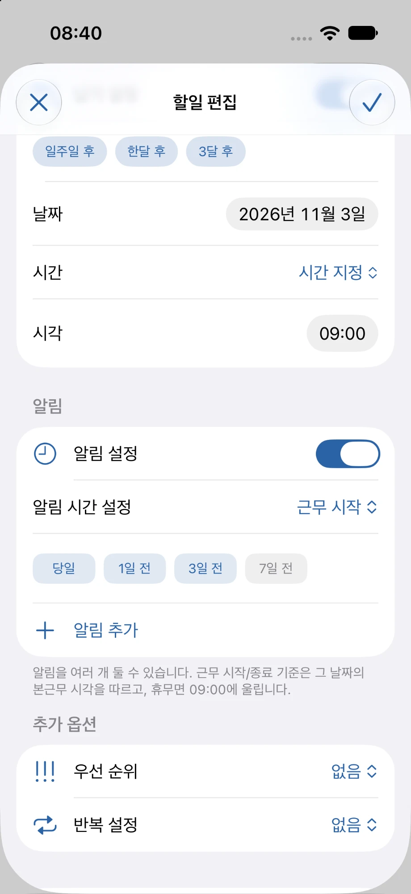
-
5 / 6
중요한 할일을 눈에 띄게 표시합니다
‘우선 순위’를 설정하면 중요한 할일을 다른 항목과 구분해 확인할 수 있습니다.
목록에서는 긴급이 빨간 ‘!!!’, 매우중요가 주황 ‘!!’, 중요가 노란 ‘!’로 표시됩니다.
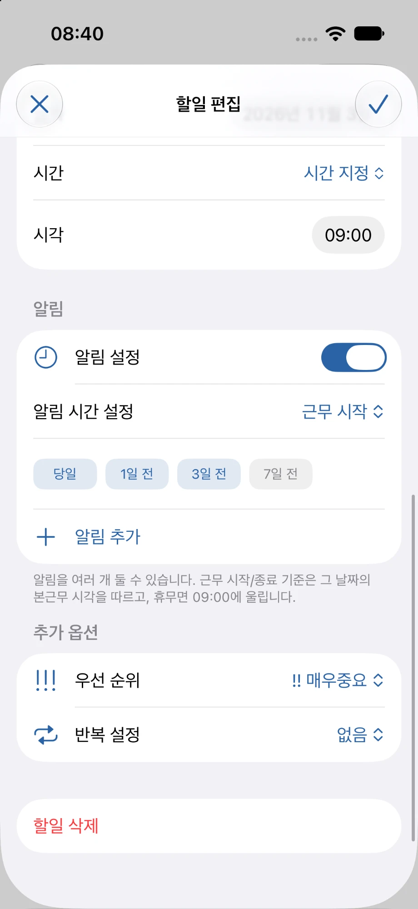
-
6 / 6
반복되는 할일을 자동으로 관리합니다
‘반복 설정’을 사용하면 같은 할일을 정해진 주기로 다시 만들 수 있습니다.
- 납기일 기준
- 정해진 납기일을 기준으로 다음 회차의 일정을 미리 계산합니다. 다음 회차는 ‘대기중인 할 일’에서 확인할 수 있습니다.
- 완료시점 기준
- 할일을 실제로 완료한 날짜를 기준으로 다음 회차의 일정을 계산합니다. 현재 회차를 완료하면 다음 날짜가 정해집니다.
- 반복할 세부할일
- 반복할 때마다 함께 넣을 세부할일을 정해 둘 수 있습니다. 새로 만들어지는 다음 회차부터 미완료 상태로 들어갑니다.
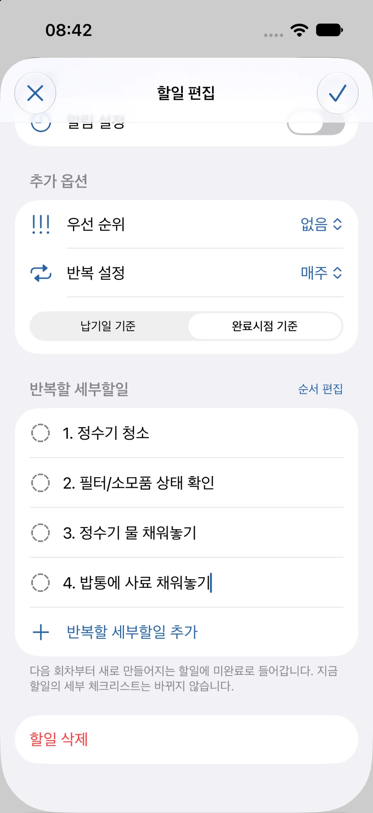
전체 보기
-
1 / 2
모든 할일을 날짜순으로 확인합니다
‘전체보기’에서는 완료하지 않은 할일을 납기 순서대로 모아 확인할 수 있습니다.
납기가 지난 할일은 맨 위 ‘납기 지난 항목’에 모이고, 나머지는 ‘이번 달’, ‘2026년 11월’처럼 달별로 나뉘어 표시됩니다. 반복 할일에는 반복 표시가, 세부할일이 있는 할일에는 진행률이 함께 보입니다.
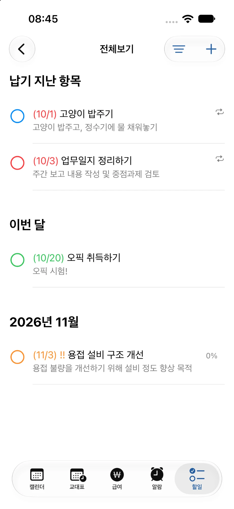
-
2 / 2
필요한 기준으로 나누어 봅니다
오른쪽 위 + 버튼 옆의 ‘보기 방식 변경’ 버튼을 이용하면 할일을 납기 순서대로 보는 ‘일정으로 보기’와 목록별로 나누어 보는 ‘목록별 분류’ 중에서 고를 수 있습니다.
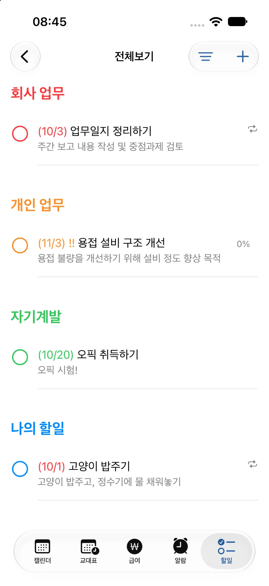
대기중인 할 일
-
1 / 2
다음 회차를 기다리는 반복 할일을 확인합니다
‘대기중인 할 일’에서는 반복 설정이 적용된 항목의 다음 일정을 확인할 수 있습니다. 납기일 기준 반복은 ‘다음 회차’에, 완료시점 기준 반복은 ‘완료일기준’에 나뉘어 표시됩니다.
납기일 기준 반복은 정해진 납기를 기준으로 다음 회차가 미리 정해지고, 완료시점 기준 반복은 현재 회차를 실제로 완료한 시점을 기준으로 다음 회차가 정해집니다.
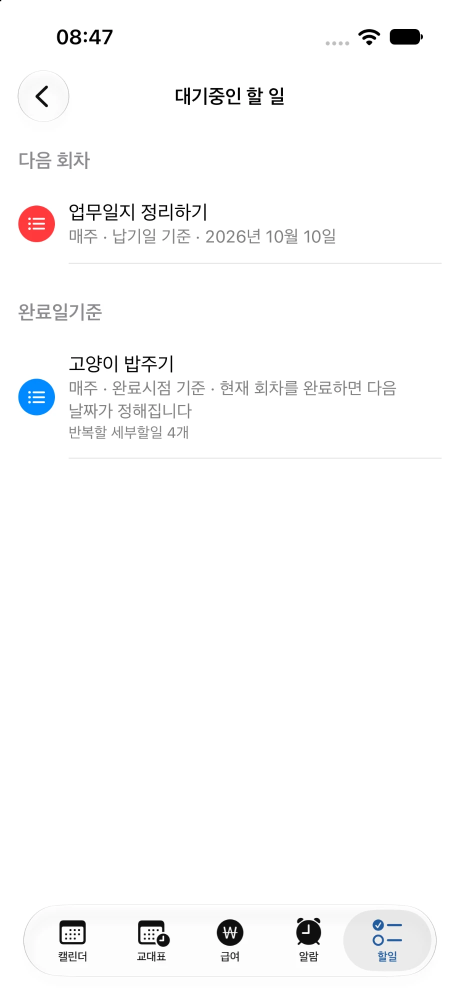
-
2 / 2
다음 반복 일정을 관리합니다
항목을 누르면 아래에 관리 메뉴가 나타납니다.
- 이번 회차 미루기
- 현재 회차를 반복 주기만큼 한 번 뒤로 미룹니다. 시간과 알림 설정은 그대로 유지됩니다.
- 반복할 세부할일
- 다음 회차부터 들어갈 세부할일을 추가하거나 삭제할 수 있습니다.
- 반복 삭제
- ‘현재 및 이후 반복 삭제’를 선택하면 아직 완료하지 않은 현재 회차와 앞으로의 반복이 함께 삭제됩니다. 이미 완료한 지난 회차와 받은 알림 내역은 그대로 남습니다.
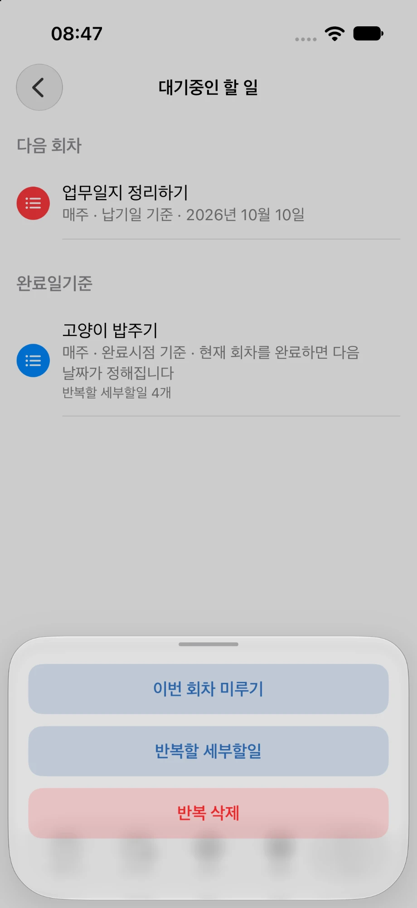
완료된 항목
-
1 / 2
완료한 할일을 확인합니다
‘완료된 항목’에서는 완료한 할일이 ‘오늘’처럼 완료한 날짜별로 모여 표시되며, 어떤 할일을 언제 마쳤는지 확인할 수 있습니다.
필요 없는 기록은 오른쪽 위 ‘편집’으로 선택해서 지우거나 ‘완료된 항목 모두 지우기’로 정리할 수 있으며, 이때 반복 설정과 앞으로의 회차는 그대로 유지됩니다.
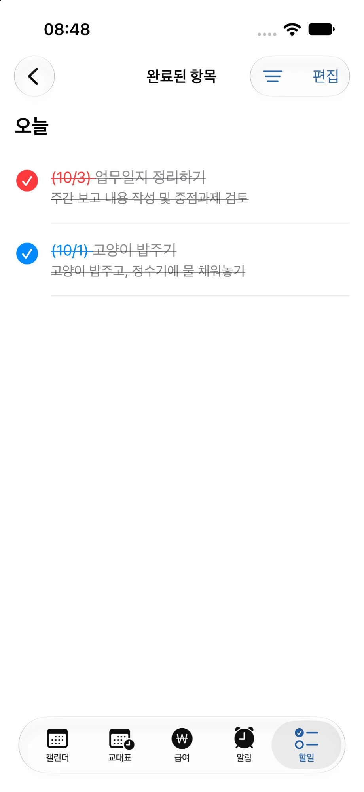
-
2 / 2
완료한 시점을 수정합니다
완료된 할일을 눌러 ‘할일 편집’ 화면을 열면 ‘완료’ 항목에서 ‘완료 시각’의 날짜와 시간을 다시 정할 수 있습니다. 지금 이후의 시각으로는 바꿀 수 없습니다.
이번 주에 완료한 항목은 ‘완료 해제’로 다시 미완료 상태로 되돌릴 수 있습니다.
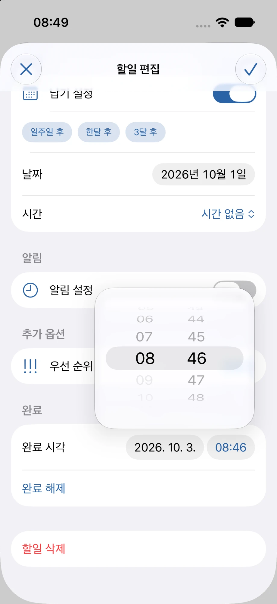